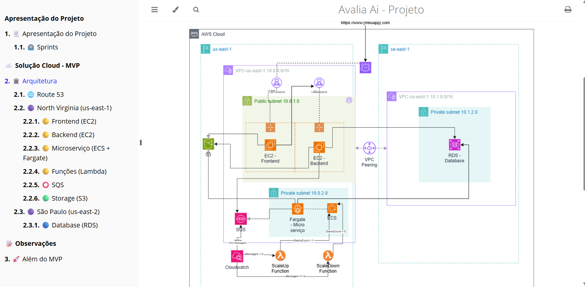
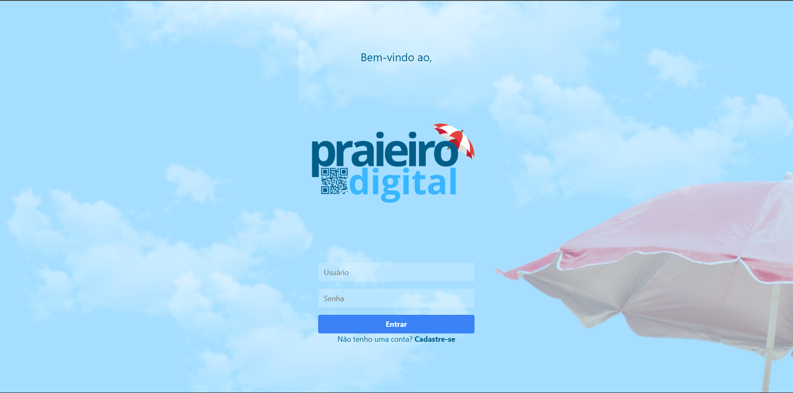
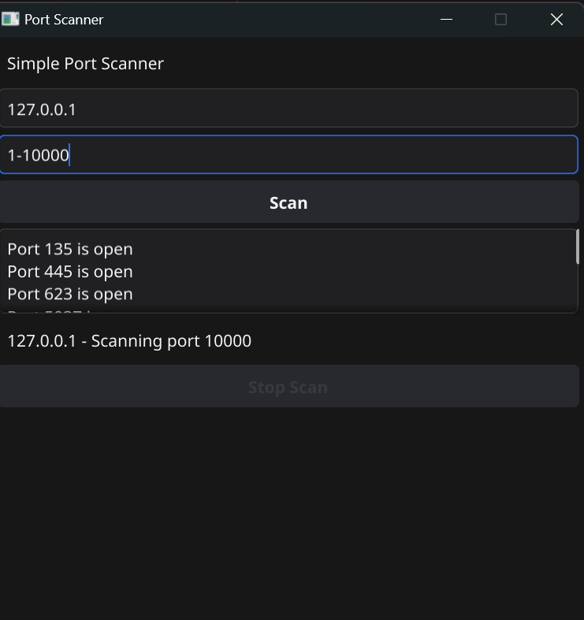
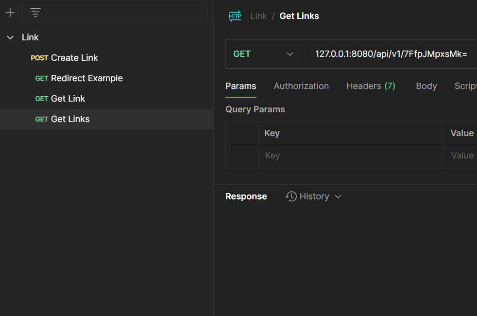
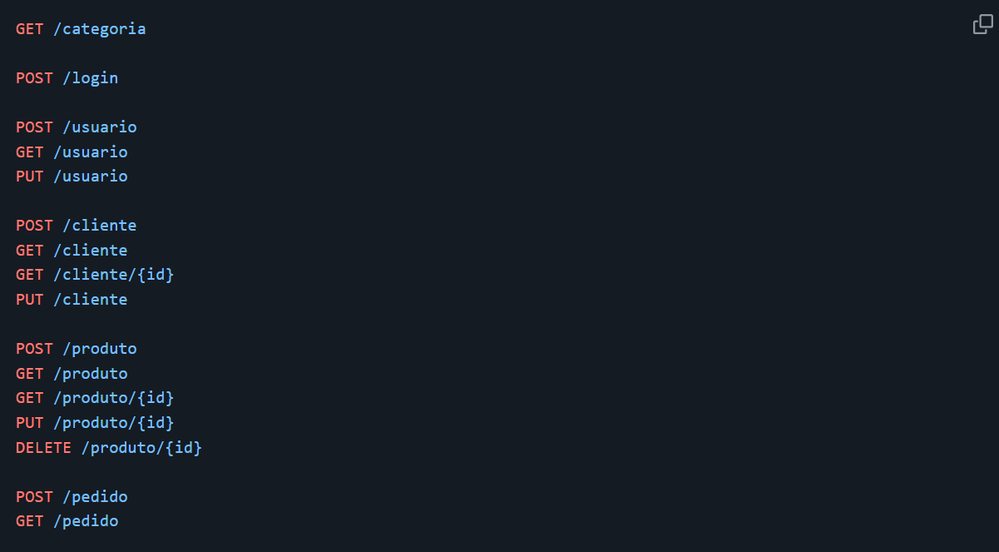
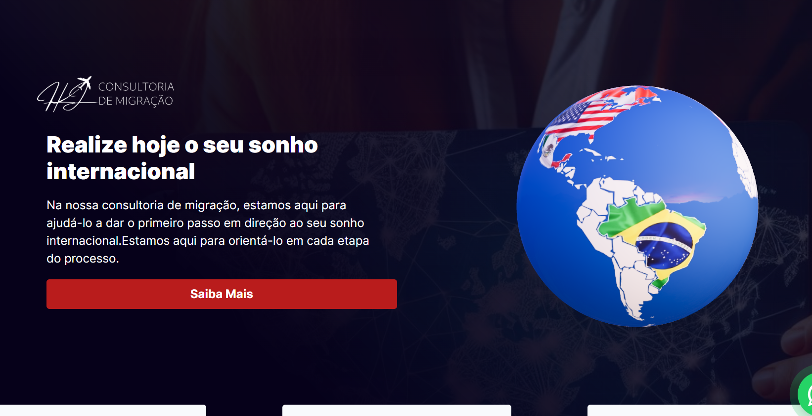

Sobre Mim

Desenvolvedor full stack, com experiência sólida no desenvolvimento de aplicações web. Possuo expertise em tecnologias como Python, Node.js, PostgreSQL, e AWS. Apaixonado por soluções escaláveis e eficientes, busco sempre aprimorar minhas habilidades em desenvolvimento, arquitetura de sistemas e computação em nuvem.
Tecnologias: Python, Node.js, AWS, Django, Next.js, React, Tailwind CSS
Meus Projetos

Avali.AI – Arquitetura de Solução em Nuvem (TCC – Escola da Nuvem)
Arquitetura de uma solução em nuvem na AWS para o Avali.AI, uma plataforma inteligente voltada para a criação, aplicação e correção automatizada de avaliações escolares. O projeto envolveu o levantamento de requisitos funcionais e não funcionais, definição de serviços AWS adequados e aplicação de boas práticas de segurança, escalabilidade e custo-benefício. Utilizando visão computacional e inteligência artificial, o Avali.AI permite a geração de provas personalizadas e a correção automática de respostas manuscritas, além de oferecer acesso online ao boletim dos alunos.
Tecnologias:

Saas Praieiro Digital
01/2025 - Atual
Desenvolvimento completo do Praieiro Digital, plataforma para gestão de quiosques e barracas de praia. Implementação fullstack utilizando Django, PostgreSQL e Tailwind CSS. Configuração da infraestrutura em nuvem e estratégias de DevOps para escalabilidade. Integração de funcionalidades como gerenciamento de planos, controle financeiro e dashboards.
Tecnologias:

Aplicativo Simple-Port-Scanner
Ferramenta desenvolvida em Golang para análise e detecção de portas abertas em redes, compatível com Windows, Linux, MacOS e Android.
Tecnologias:

Encurtador de Link (Backend)
API REST desenvolvida em Golang para encurtamento de URLs.
Tecnologias:

API - PDV (Frente de Caixa)
11/2023 - 12/2023
Projeto de conclusão do curso na Cubos Academy, uma API robusta para um sistema de Ponto de Venda (PDV), desenvolvida com Node.js e PostgreSQL.
Tecnologias:

Website - HJ Consultoria
02/2024 - 03/2024
Desenvolvimento de uma landing page estática utilizando Next.js e Tailwind CSS, garantindo desempenho otimizado e experiência fluida para os usuários.
Tecnologias:
Entre em Contato
Estou sempre aberto a novas oportunidades, projetos interessantes ou apenas para trocar uma ideia. Sinta-se à vontade para me contatar!
Fale comigo